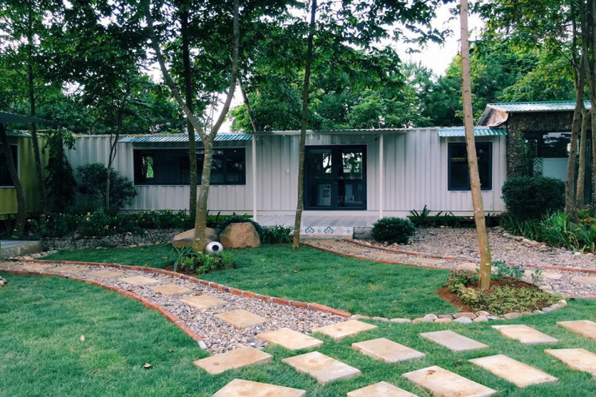

1. Giới thiệu Ba Vì
Ba Vì là một huyện bán sơn địa nằm ở phía Tây Hà Nội, cách trung tâm Thủ đô khoảng 60km, nổi tiếng với khí hậu mát mẻ, thiên nhiên trong lành và nhiều di tích lịch sử – văn hóa đặc sắc. Nơi đây có Vườn Quốc gia Ba Vì với hệ sinh thái rừng phong phú, những con đường uốn lượn giữa rừng thông, cùng các điểm đến hấp dẫn như Nhà thờ đổ, Đền Thượng, Ao Vua, Khoang Xanh, Thiên Sơn – Suối Ngà. Không chỉ là địa điểm nghỉ dưỡng cuối tuần lý tưởng, Ba Vì còn níu chân du khách bởi ẩm thực đặc sản như sữa tươi, sữa chua, gà đồi, lợn mán… Với sự kết hợp hài hòa giữa cảnh quan thiên nhiên và giá trị văn hóa, Ba Vì xứng đáng là một trong những điểm đến hấp dẫn bậc nhất gần Hà Nội.
2. Di chuyển tới Ba Vì
2.1. Xe máy / ô tô cá nhân
Từ trung tâm Hà Nội các bạn có thể lựa chọn tuyến đường Đại lộ Thăng Long hoặc tuyến đường 32 để lên Vườn Quốc gia Ba Vì. Nếu xuất phát theo hướng Đại lộ Thăng Long, ô tô các bạn có thể đi vào đường chính, xe máy các bạn hãy sử dụng tuyến đường gom bên cạnh. Đi hết Đại lộ Thăng Long các bạn có thể rẽ phải vào đường 21A đi tới ngã 4 viện 105 rồi rẽ trái đi tiếp tới khi có biển chỉ dẫn. Hãy lựa chọn đi đường này nếu các bạn muốn kết hợp đi làng cổ Đường Lâm trước rồi mới lên Ba Vì. Một đường khác là hết Đại lộ Thăng Long các bạn cứ đi thẳng theo biển chỉ dẫn qua đường Làng văn hóa các dân tộc ở Đồng Mô, hết tuyến đường này các bạn cũng rẽ trái rồi đi thêm khoảng vài trăm mét sẽ thấy biển hướng dẫn vào Vườn Quốc gia Ba Vì.
2.2. Xe buýt
Nếu không muốn sử dụng phương tiện cá nhân, các bạn có thể sử dụng xe buýt để tới Ba Vì. Tuy nhiên, tùy từ vị trí xuất phát mà các bạn có thể phải đổi tới 3 chặng xe buýt mới có thể tới được đây. Từ Hà Nội các bạn hãy di chuyển tới Bến xe Mỹ Đình, tại đây có 2 tuyến buýt có thể sử dụng là tuyến 74 Mỹ Đình – Xuân Khanh và tuyến 71 Mỹ Đình – Bến xe Sơn Tây. Tới điểm cuối Xuân Khanh hoặc Bến xe Sơn Tây các bạn xuống và chuyển tiếp sang tuyến xe 110 Bến xe Sơn Tây – Vườn Quốc gia Ba Vì. tuyến 110 này sẽ dừng trả khách ngay tại quầy bán vé vào cổng. Từ đây các bạn có thể thuê xe ôm để lên tới các điểm tiếp theo trong vườn.
3. Lưu trú
Ba Vì hiện có rất nhiều lựa chọn lưu trú đa dạng, phù hợp cho cả nhóm bạn, gia đình hay các cặp đôi. Du khách có thể chọn nghỉ tại các resort cao cấp với đầy đủ tiện nghi, hồ bơi và dịch vụ chăm sóc sức khỏe; hoặc các homestay, bungalow xinh xắn với không gian gần gũi thiên nhiên, view hướng núi, vườn cây. Ngoài ra, những khu cắm trại ven rừng, ven hồ cũng rất được giới trẻ yêu thích nhờ không khí trong lành và trải nghiệm gần gũi. Dù ở đâu, lưu trú tại Ba Vì đều mang lại cảm giác thư giãn và hòa mình vào cảnh sắc thiên nhiên yên bình.
4. Điểm tham quan nổi bật
4.1. Vườn Quốc Gia Ba Vì
Vườn quốc gia Ba Vì nằm trên khu vực dãy núi Ba Vì thuộc huyện Ba Vì, Hà Nội và hai huyện Lương Sơn, Kỳ Sơn tỉnh Hòa Bình, cách thị xã Sơn Tây 15 km và cách trung tâm Hà Nội khoảng 50 km về phía tây. Từ đầu thế kỉ 20, Ba Vì đã là địa danh nổi tiếng nhờ sự đa dạng của các hệ sinh thái và có phong cảnh đẹp, khí hậu mát mẻ. Vườn quốc gia này nằm trong dãy núi cao chạy dọc theo hướng Đông Bắc – Tây Nam với đỉnh Vua cao 1.296 m, đỉnh Tản Viên cao 1.227 m, đỉnh Ngọc Hoa cao 1.131 m. Khu vực này thường thu hút du khách nhiều nhất vào các dịp cuối năm, lúc này lượng khách đổ về du lịch Vườn Quốc gia Ba Vì thường khá đông để chụp ảnh hoa dã quỳ.
4.2. Thác Thiên Sơn – Suối Ngà
Là một phần trong quần thể du lịch Ba Vì nên thơ và hùng vĩ, nằm cách trung tâm thủ đô Hà Nội hơn 50 km về phía Tây, từ lâu, Thiên Sơn Suối Ngà là một điểm đến hấp dẫn và thú vị với du khách. Nơi đây, một bên là thiên nhiên tươi đẹp, xanh mát, không khí trong lành, một bên là các dịch vụ vui chơi giải trí được đầu tư bài bản, tạo nên một hệ thống hoàn chỉnh, độc đáo. Khu du lịch gồm 3 tiểu khu: Hạ Sơn, Trung Sơn và Ngoạn Sơn, mỗi tiểu khu lại có những đặc trưng riêng. Hạ Sơn có thác tam cấp, Trung Sơn với thác cổng trời hùng vĩ và Ngoạn Sơn, từ trên cao, có thể bao quát toàn bộ khung cảnh của Thiên Sơn Suối Ngà.
5. Ẩm thực đặc sản
Đặc sản Ba Vì nổi bật với sữa tươi, sữa chua, gà đồi, lợn mán, cá suối và các món rau rừng.
6. Lưu ý khi đi Ba Vì
Nên chuẩn bị áo khoác, thuốc chống côn trùng, và đặt phòng homestay trước khi đi cuối tuần.